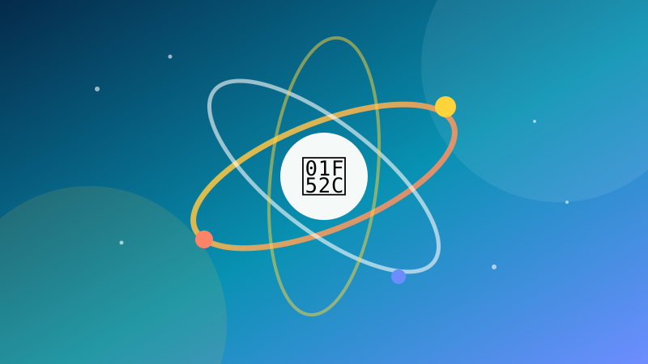

🔬 WetenschapSterrenkaart
Teken sterren op basis van helderheid en positie.
Speel dit idee opent de app en voert het volledige programma meteen uit. Je voortgang wordt lokaal in je browser bewaard.
1 Waar gaat dit over?
Je maakt een eenvoudige sterrenkaart met matplotlib. Je leert scatterplots en het omzetten van coördinaten.
2 Wat leer je?
matplotlibscatterlistsvisualisatie
3 Stap voor stap
Stap 1
Maak stergegevens
Elke ster heeft een x-, y- en helderheidswaarde.
python
sterren = [
(1, 2, 8), (3, 5, 4), (6, 1, 9), (8, 7, 3), (4, 4, 6),
]
Stap 2
Teken de sterren
Gebruik een scatterplot met de helderheid als grootte.
python
import matplotlib.pyplot as plt
x = [ster[0] for ster in sterren]
y = [ster[1] for ster in sterren]
grootte = [ster[2] * 20 for ster in sterren]
plt.scatter(x, y, s=grootte, c="white")
plt.gca().set_facecolor("#0c0c1a")
plt.show()
Stap 3
Maak het mooier
Voeg een titel en een donkere achtergrond toe en verberg de assen.
python
plt.style.use("dark_background")
plt.scatter(x, y, s=grootte, c="gold", alpha=0.9)
plt.title("Mijn sterrenkaart")
plt.axis("off")
plt.show()4 Tips
- Lees echte sterrendata uit een CSV-bestand.
- Kleur sterren op basis van temperatuur.